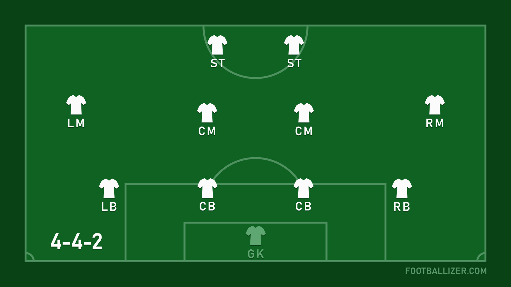

All Tactics

What is Football Tactics
Football tactics refer to the strategic plans and systems employed by teams to achieve success on the pitch. It encompasses a wide array of elements, including formation, player positioning, movement patterns, and style of play. Tactics are crucial in determining the outcome of a match, as they dictate how a team defends, attacks, and transitions between these phases. Formations serve as the foundation of football tactics, with coaches selecting the arrangement of players on the field based on their strengths, weaknesses, and the opposition's tendencies. Whether it's the classic 4-4-2, the modern 4-3-3, or variations like the 3-5-2, each formation has its own advantages and challenges. Player positioning within these formations is essential for maintaining defensive solidity, creating passing lanes, and exploiting space to attack effectively. Tactical principles such as pressing, counter-pressing, zonal marking, and man-to-man marking are employed to disrupt opponents' play and regain possession. Furthermore, football tactics involve intricate movement patterns and off-the-ball runs to create scoring opportunities and break down stubborn defenses. Coaches drill their teams to execute set plays, counterattacks, and positional rotations with precision and coordination. Ultimately, football tactics are about maximizing a team's strengths while exploiting the weaknesses of the opposition. Success in football requires not only individual skill but also a deep understanding of tactical principles and the ability to adapt strategies based on the flow of the game.
Formation for Three-Defenders Tactics is here.

Formation for Four-Defenders Tactics is here.
Formation for Five-Defenders Tactics is here.